21.05.2025 11:23:17
Я — поток в теле.
вижу, как меняется ум.
чувствую, как сопротивляется плоть.
Канал — про внимание.
Между дыханием и мыслью,
между болью в теле и тревогой в уме,
между одиночеством и пустотой.
Пучекон (py4eek0ne)— от ручей(ок) - 0ne - единство.
Жаждущий - услышит.
22.05.2025 12:28:36
Кайдзен (改善) — Японская философия, практика,
которая фокусируется на непрерывном совершенствовании процессов производства, разработки,
вспомогательных бизнес-процессов и управления, а также всех аспектов жизни.
Работать над собой и своим окружением, делать всё лучше, шаг за шагом.
Я — поток в малом, ручей - текущий к морю.
Кайдзен — искусство замечать.
1 минута дыхания.
1 взгляд вглубь себя.
1 маленький выбор
Кайдзен — не революция.
Шёпот: «Сделай чуть лучше. Сегодня. Сейчас.»
Сложи с вниманием одежду.
Выпей воды, чувствуя вкус.
Задай себе вопрос: «Что я прячу от себя?»
23.05.2025 06:24:52
Утро — консоль.
Жизнь запускается, как новая игра.
В первые минуты — твой скилл на кону.
Просыпаюсь — слышу пение птиц, слежу за их танцем в небе.
Сначала движение: плечи, спина, приседания, дыхание и пара асан чтобы растянуть корпус, ощутить
позвоночник.
Как будто кручу конфиг: громкость, чувствительность, яркость.
Если не задать ритм, тогда придется играть на чужих конфигах.
Как говорят, «спешка нужна только при ловле блох», а в жизни лучше держать ритм. Спешка рвёт нить
внимания, наполняя день суетой вместо ясности.
Внимание — мой курсор.
Стиль - это когда я держу ось.
23.05.2025 11:09:23
cleanhead
23.05.2025 11:09:23
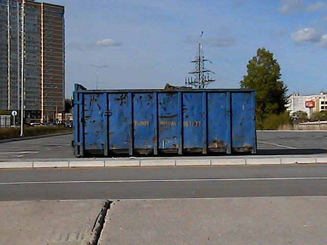
24.05.2025 10:08:41
Грязь в быту → грязь в мышлении → хаос в действиях → социальные сбои.
24.05.2025 10:08:41
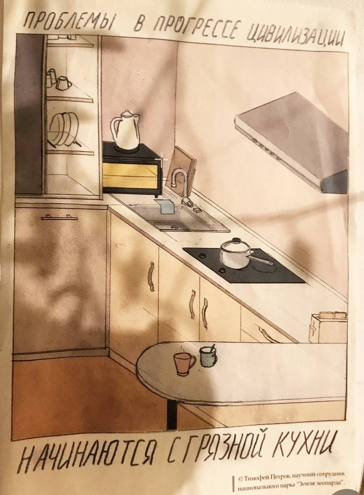
24.05.2025 17:30:30
Меньше знаешь - крепче спишь?
24.05.2025 19:22:11
way1ssilence
24.05.2025 19:22:11
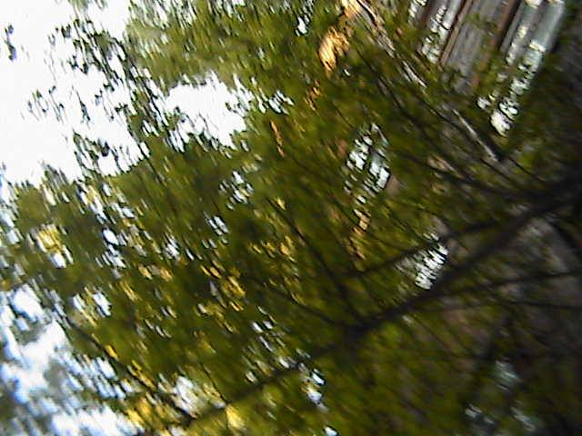
25.05.2025 14:46:23
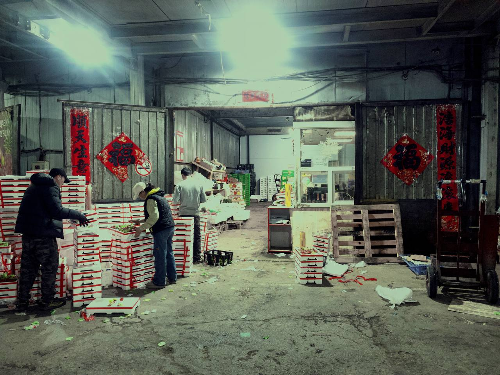
26.05.2025 13:43:40
но выход - есть)
26.05.2025 13:43:40
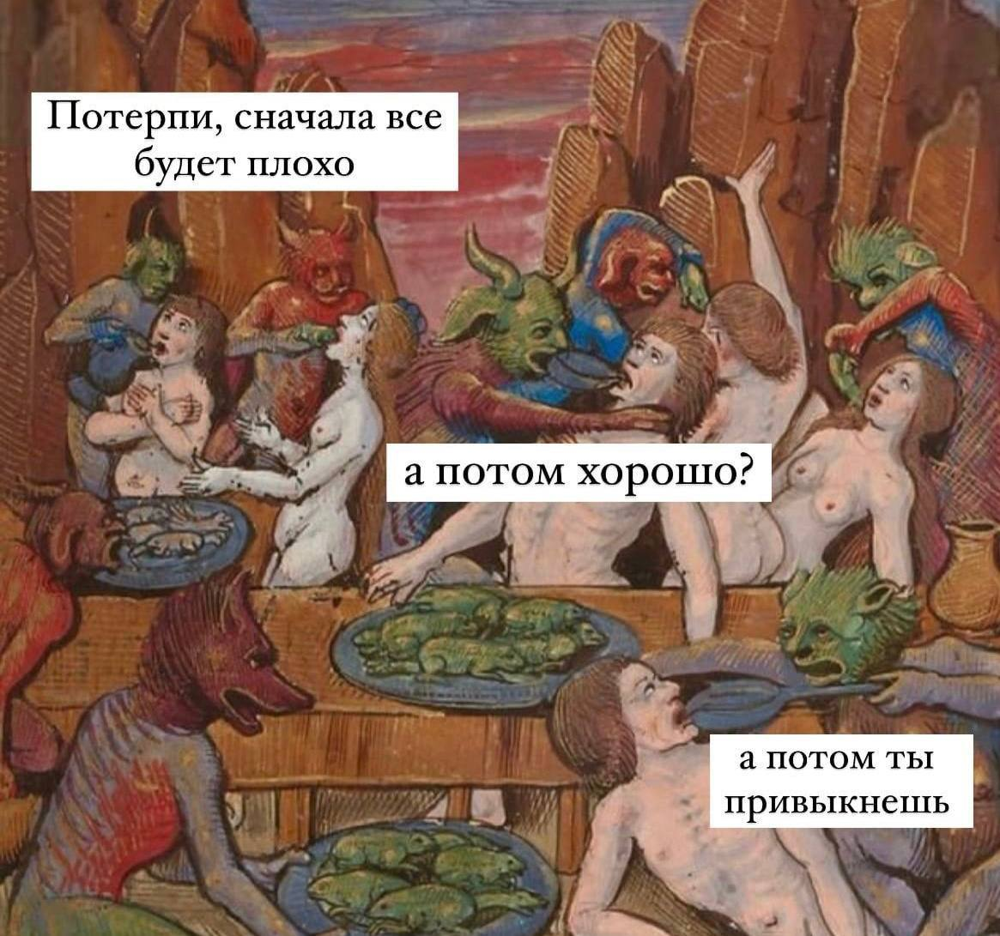
27.05.2025 13:42:19
48.460845, 135.081983
27.05.2025 13:42:19
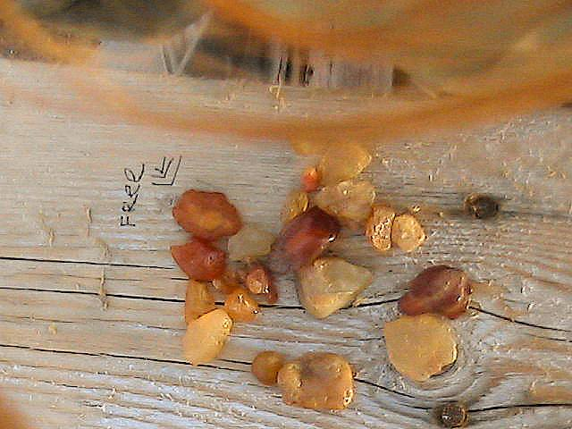
28.05.2025 21:00:38
29.05.2025 16:52:26
комфорт - как плесень.
люди стали меньше двигаться. всемирная организация здравоохранения бьет тревогу: треть взрослых на
планете физически неактивна. это число выросло на 5 процентов с 2010 по 2022 год.
осознанный выбор сидячего образа жизни может иметь последствия , от замедленного обмена веществ до риска
болезней.
лень - это выбор, который имеет свою цену для здоровья.
разум:
мозг деградирует. бесконечный поток информации(какой?), уведомления(от кого?), навязанная
многозадачность — все это приводит к перегрузке. результат - снижение концентрации,умственная усталость,
ухудшение памяти.
мозг, постоянно переключающийся между задачами, не может эффективно обрабатывать информацию. похоже мы
теряем способность к глубокому мышлению, к сосредоточенности.
постоянная атака на нашу способность мыслить!
плата за комфорт:
- ментальная устойчивость.
в условиях сверхкомфорта и постоянной защиты от внешних раздражителей, теряем способность справляться со
стрессом и трудностями. исследования показывают, что ослабление социальных связей и давление цифровой
среды способствуют снижению нашей сопротивляемости.
мы строим мир, где любое неудобство кажется катастрофой - это лишает нас необходимой закалки.
меняемся, подстраиваясь под новую реальность, которая предлагает комфорт в обмен на физическую
активность, концентрацию и ментальную стойкость?
осознаёте цену комфорта?
*вызвал такси что бы поехать в спорт-зал*
29.05.2025 16:52:26
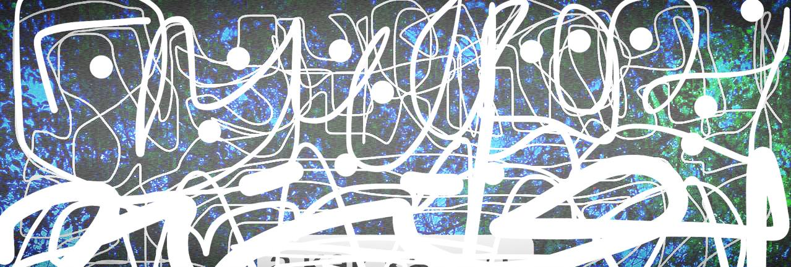
30.05.2025 10:18:56
стул стоит рядом, слегка надменный
30.05.2025 10:18:56
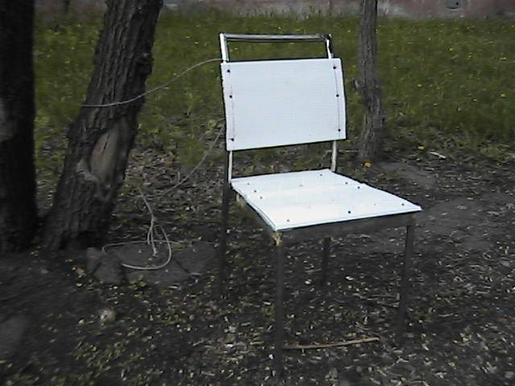
02.06.2025 12:05:41
если оступишься назад, не вини себя, это гинерит избегание по новой. раззаразом
02.06.2025 12:06:36
и не бойся НИЧЕГО
03.06.2025 22:10:34
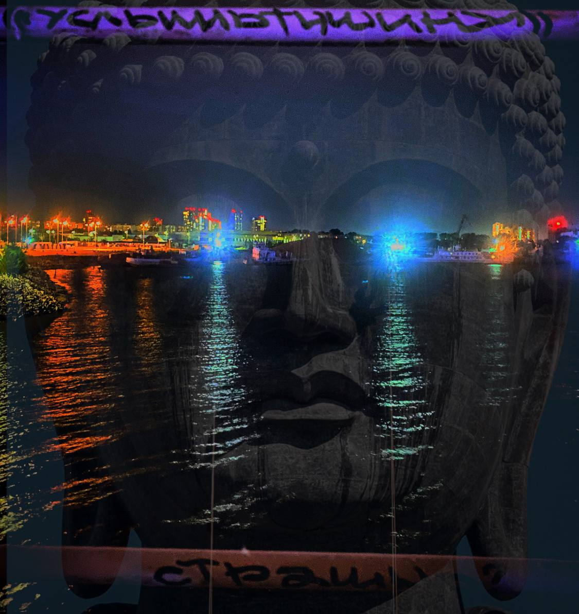
04.06.2025 21:55:03
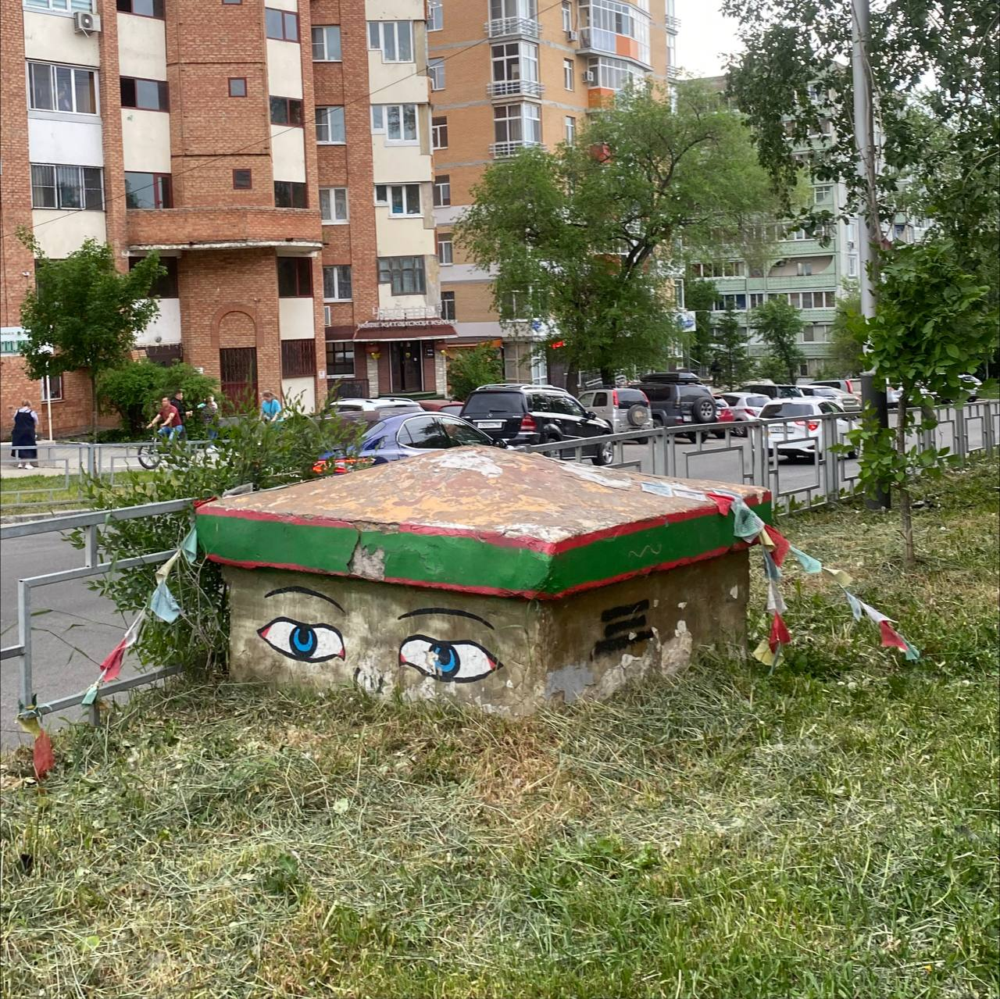
05.06.2025 11:30:41
я карабкаюсь вверх, что бы оглянутся
не хожу ли я по кругу?
ведь так обманчив ЛЕС 🤣🤣🤣
06.06.2025 05:11:59
даже не знаю, кто большее впечатление произвел, этот парень, или йода🧘♂️
06.06.2025 05:11:59
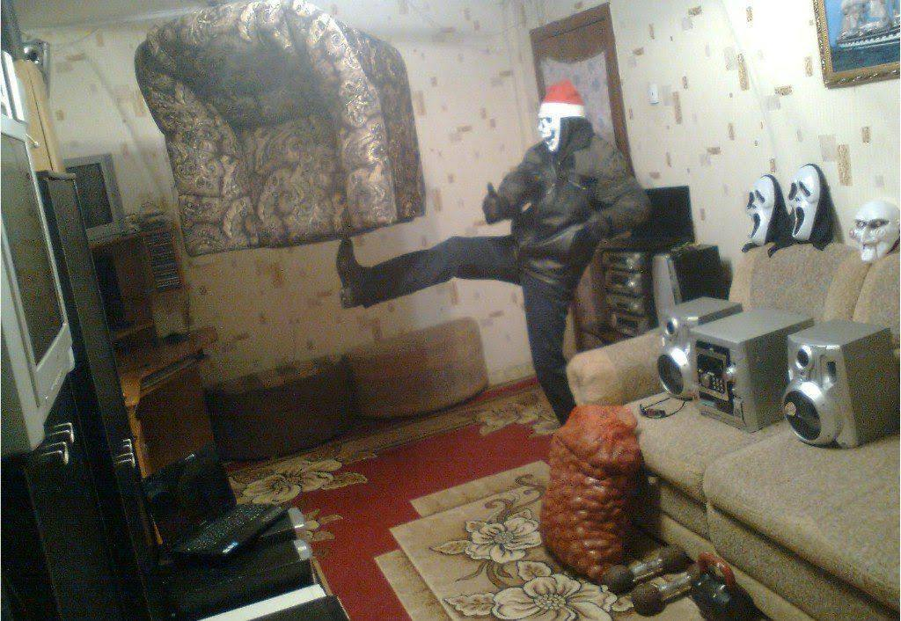
07.06.2025 20:23:37
или этот…..
07.06.2025 20:23:37
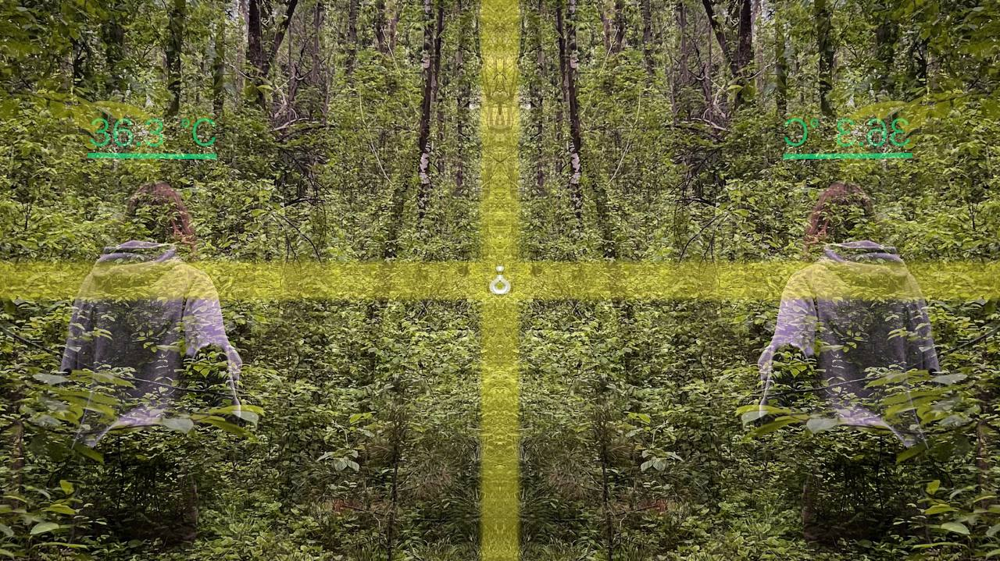
09.06.2025 00:01:06
0nset41pset
10.06.2025 11:35:09
para11e1
10.06.2025 11:35:09
11.06.2025 13:12:29
то, что потеряло свою актуальность
11.06.2025 13:12:29
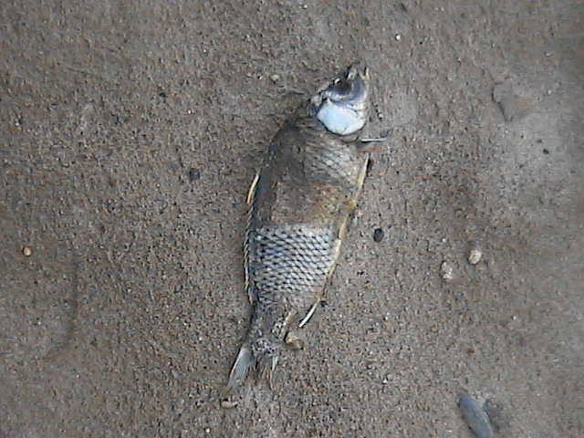
11.06.2025 13:56:53
не расстраивайтесь за котика, там есть выход!
подвал - это фильтр его реальности, потому-то он и выглядит драматичным.
если копнуть - там влажно, серо и грязно, но тепло, подвале, или мыслях - не важно.
жаль конечно, что у него нет времени думать о том, что его дом окружен одуванчиками
☀️☀️☀️☀️☀️☀️☀️
11.06.2025 13:56:53
11.06.2025 17:27:05
N0-f1lter
11.06.2025 17:27:05
20.06.2025 13:11:23
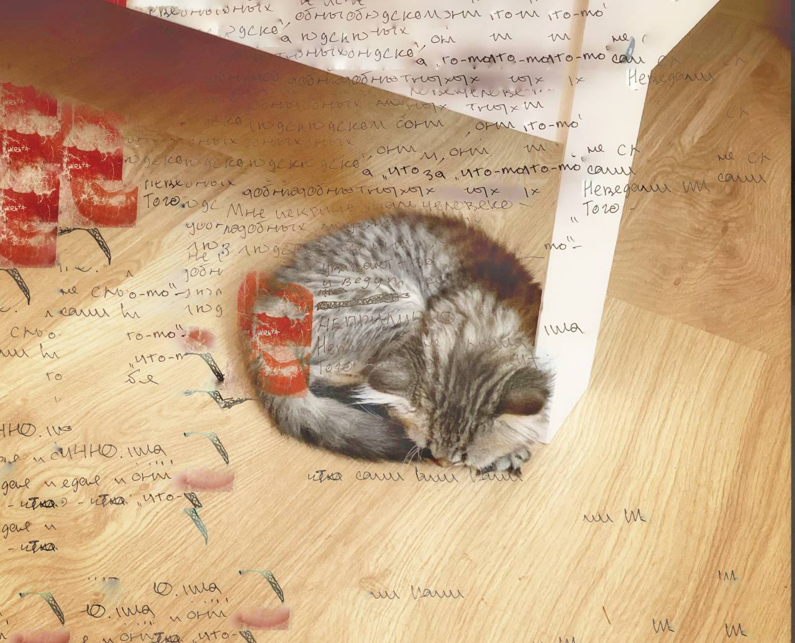
22.06.2025 13:35:50
в супер позиции
22.06.2025 13:35:50
26.06.2025 23:20:23
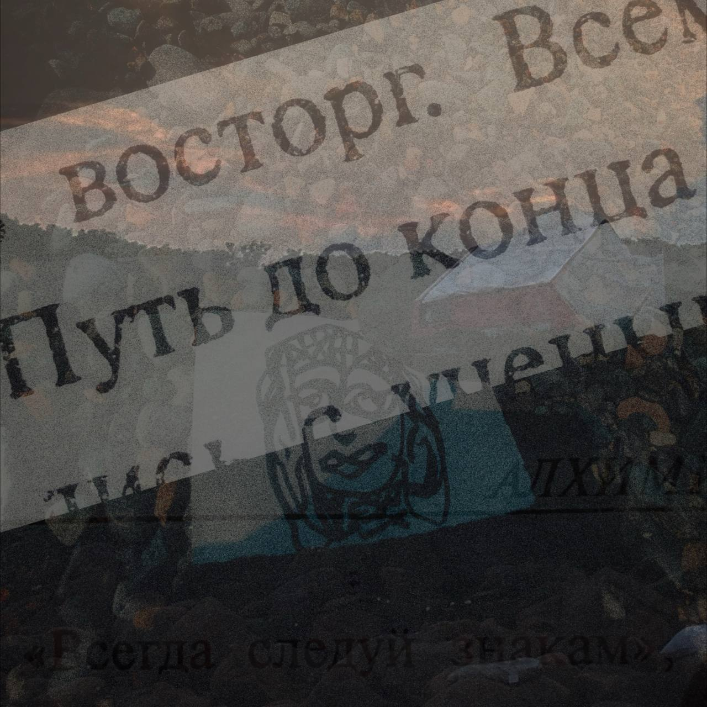
28.06.2025 22:25:33
Логика - наука о формах, законах и приёмах правильного мышления, стремящегося к
истине
происходит от греч. λόγος (lógos) — «слово», «речь», «разум», «смысл»
активно учусь использовать это как основной инструмент, который наводит порядок в мыслях и помогает жить
разумно
28.06.2025 22:25:33
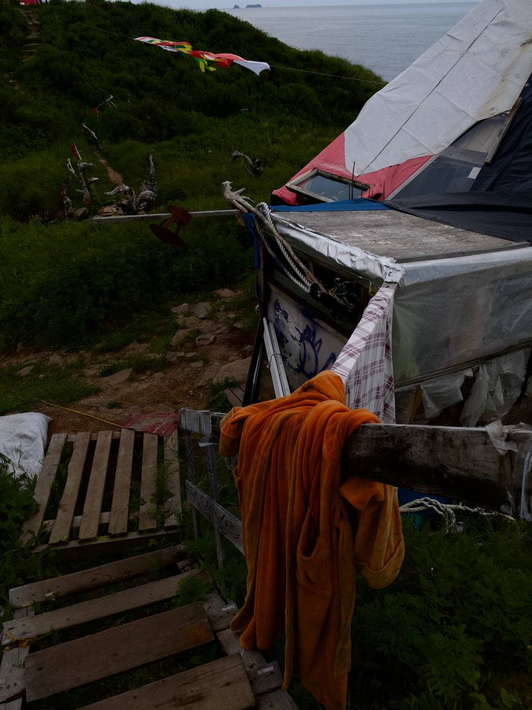
01.07.2025 10:41:40
фундамент логики - четыре классических закона
Закон тождества
Закон непротиворечия
Закон исключённого третьего
Закон достаточного основания
это буквально правила игры разума, которые помогают принимать решения, видеть ошибки в спорах,
саморефлексии, защищаться от манипуляций и эффективнее обучаться
принципы их работы разберу ниже
01.07.2025 10:41:40
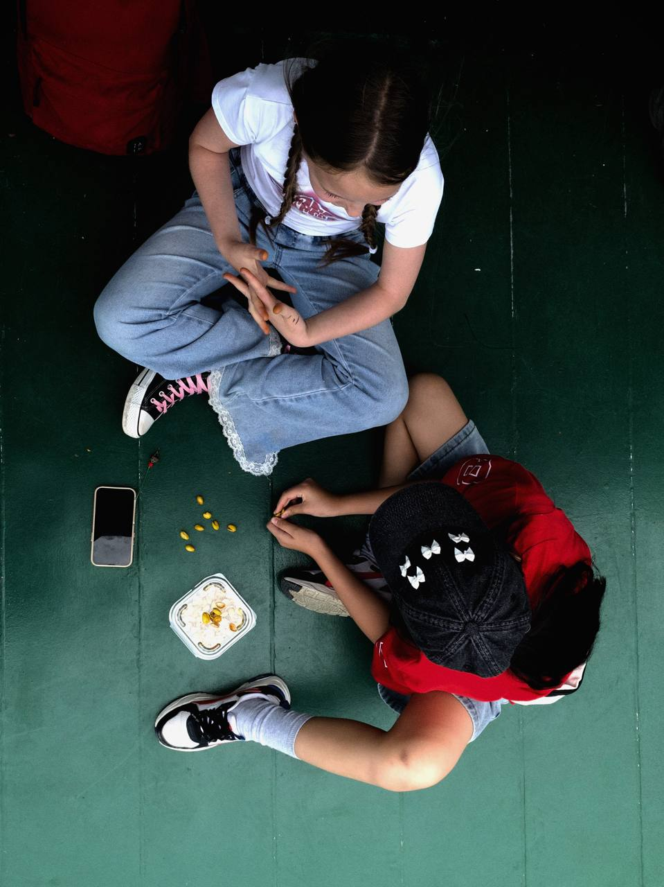
02.07.2025 08:47:48
закон тождества - мысль должна быть тождественна самой себе в процессе рассуждения.
то есть А=А и никак иначе
если я говорю А, то не могу превращать его в Б
если в контексте я говорю о школьнике, в последующем ходе диалога называть его студентом - будет
нарушением закона.
крушение самолета НЕ может называться экстренной посадкой- это нарушение закона
термическое воздействие в контексте пожара- это нарушение закона
взрыв - это не хлопок
подменяя понятия в рамках событий можно сильно исказить смысл и ход моей мысли
либо это ошибка в ходе мыслительного процесса, либо стратегия подмены понятий для манипуляции мнением.
06.07.2025 11:35:58
закон непротиворечия - два противоположных суждения не могут быть одновременно
истинны -в одно и то же время и в одном и том же отношении
то есть А≠Б
если байкал глубокий — он не мелкий
он честный человек, просто иногда врёт, когда нужно
-утверждается что человек честный
- он врёт по необходимости
→ в итоге честность и систематическая ложь существуют вместе — в одном и том же отношении
это нарушение закона непротиворечия
если честность = способность говорить правду,
а ложь = её отрицание,
то нельзя быть честным и вруном одновременно - в одной и той же плоскости
06.07.2025 11:35:58
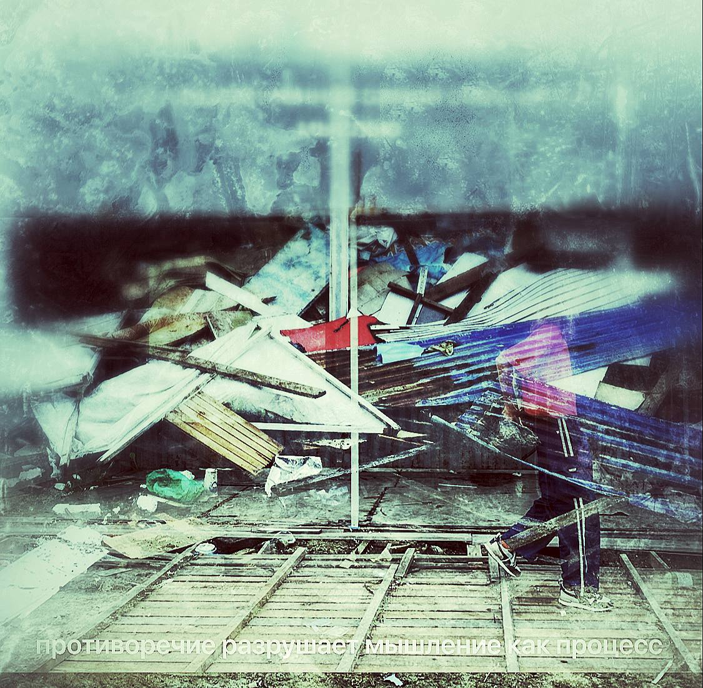
09.07.2025 07:46:43
закон исключённого третьего —
два противоположных суждения не могут быть одновременно ложны.
одно из них обязательно истинно - третьего не дано
либо А, либо не-А.
третьего варианта нет — ни «что-то между», ни «оба не подходят»
«он не жив, но и не мертв» - взаимоисключающие поняти
если человек жив — он не мёртв.
если человек мёртв — он не жив.
подмена смысла через «третий вариант» — это либо ошибка мышления, либо манипуляция
09.07.2025 08:55:47
закон достаточного основания — принцип, согласно которому любое утверждение требует
достаточного основания или причины, объясняющей, почему оно истинно.
ничто не может быть принято за истину без наличия обоснования, обеспечивающего его логическую поддержку.
если я говорю «а истинно», я обязан показать, почему так.
без основания утверждение не имеет смысла, даже если кажется правдой
«он виновен» — просто слова
нужны доказательства: свидетельства, факты, логические выводы.
без этого основание отсутствует, и утверждение — пустое.
основание — не ощущение, мнение или домыслы, а то, что можно проверить и подтвердить.
если основания нет —мышление превращается в произвол.
09.07.2025 08:55:47
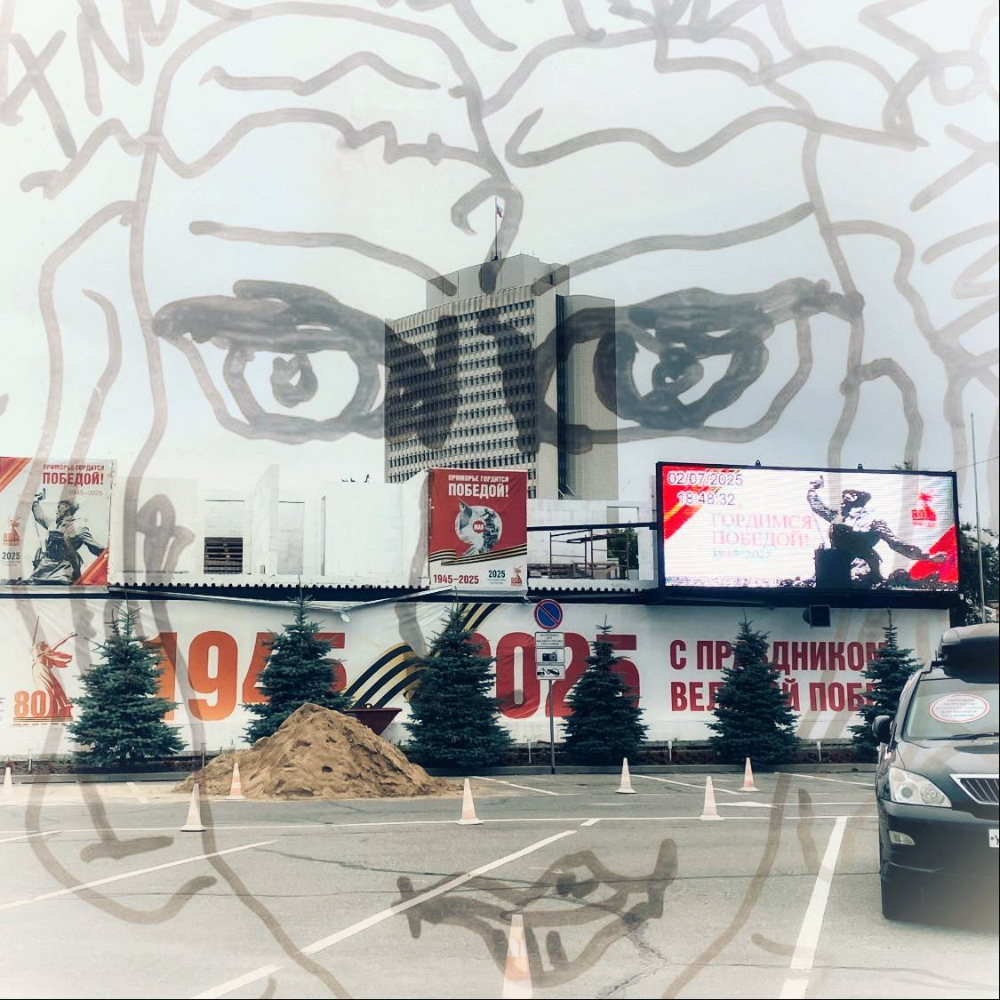
10.07.2025 12:50:16
далее я напомню об основных методах мышления, один из двух базовых - дедукция.
лат. deductio — «выведение», «отведение»
от de- (вниз, от) + ducere (вести)
то есть - движение от общего к частному
вывожу конкретное из общего правила, спуская его вниз к примеру
пример:
все птицы откладывают яйца → воробей — птица → воробей откладывает яйца
дедукция работает строго
если посылки верны ——-вывод обязателен
ошибки же бывают в том, с чего начал
пример:
все, кто молчит, виноваты → антон молчит → антон виноват
вывод логичен!
но начальное правило - бред
логика не лечит, если ты сам себе врёшь в основе.
в чем сила?
10.07.2025 12:50:16
11.07.2025 12:42:13
следующий метод мышления - индукция.
лат. inductio - «введение», «приведение внутрь»
от in- (внутрь) + ducere (вести)
то есть — восходящий путь: от множества наблюдений к общему выводу
пример:
воробей летает
голубь летает
стриж летает
→ все птицы летают
индукция даёт идею или гипотезу,
но новый факт может разрушить твоё обобщение
ошибка — поспешное обобщение
пример:
видел три белых лебедя → все лебеди белые
нашёл чёрного — вывод рухнул
логика бессильна, если искажать факты на старте
11.07.2025 12:42:13
11.07.2025 21:15:55
я просто смотрю на печь.
отбросив смыслы вижу только её наличие
бытие вещью — ты
просто стоишь на полу, как стол, табурет, ведро
всё начинается с простого «есть»
моя любимая игра, кроме насущной - симулятор камня в стиме
11.07.2025 21:15:55
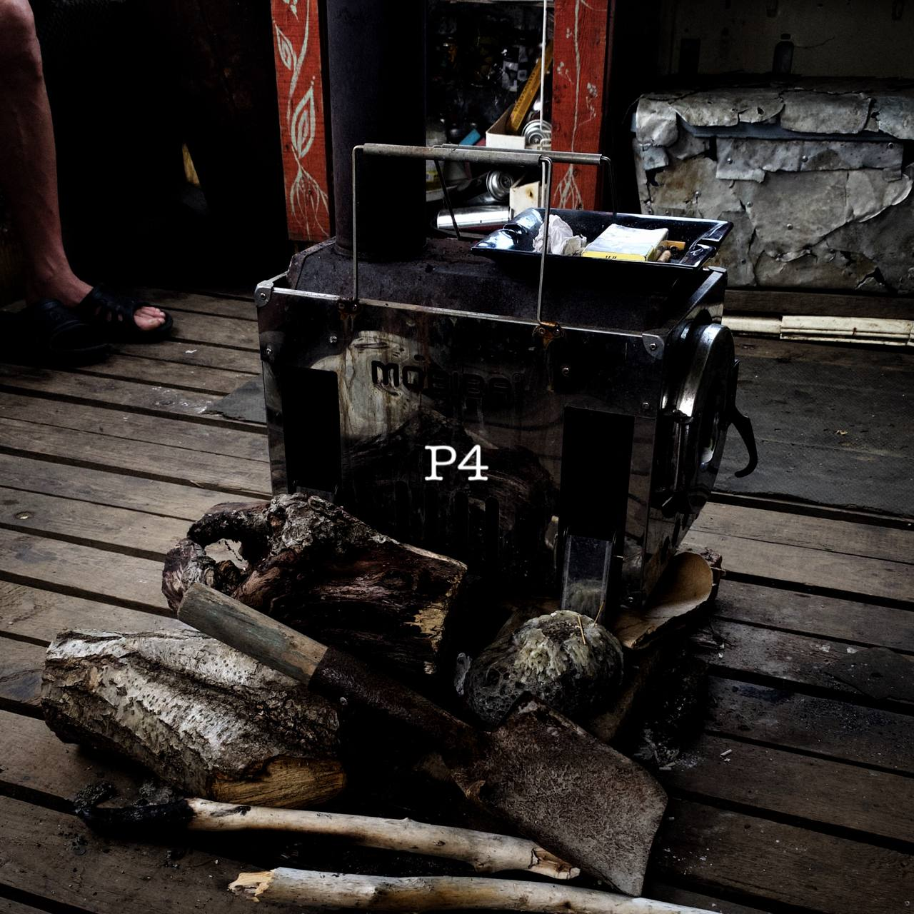
17.07.2025 12:27:32
взгляд цепляется, разум 0n
это вещь с признаками
признаки - не случайны.
ведь у всякой вещи можно выделить несколько признаков, которые можно разбить на категорий
начинаю примерять:
что это — печь, дровяная
сколько — одна
какая — металлическая, холодная, чуть запылённая
в отношении к чему — напротив стола, стоит чтобы греть, сейчас не нужна
где — в центре комнаты
когда — сейчас, летом
как расположена — прямо на полу, устойчиво
что имеет — дверцу, трубу, зольник
что делает — сейчас ничего, но предназначена греть
что с ней делают — растапливают, чистят, иногда
смотрят на неё
сначала смотрю,
далее вижу структуру,
категории помогают понимать, что перед тобой и почему оно именно такое
22.07.2025 18:13:48
31.07.2025 00:46:07
люблю смотреть в окно поезда,
не зная, какой ландшафт
подарит следующая секунда.
то поле, то роща,
то одиноко стоящий домик —
как внезапная мысль в уме.
деревья, похожие друг на друга,
как скучные дни, эпелептичный камуфляж.
прищурившись, вижу хрупкие, но высокие
лиственницы, окружившие хлипкие молодые берёзы —
война за свет!
и всё проносится мимо,
усыпав лес маньчжурским орехом
— лист которого идеальной формы.
орех горький, но кабаны его едят.. почему?
и всё это —
промелькнуло
как невероятно округлая
поляна шалфея
посреди леса в следующий момент -
сменившись тёмным сараем,
в нём нет жизни,
а вокруг него - полно
этот вид смыл с окна ливень,
заставив углубиться в тёплые истории людей,
везущих в будущее опыт под нойс колёс
время всё время едет мимо,
едет мимо и крыша —
благо, она есть😁
31.07.2025 00:46:07
31.07.2025 04:27:51
медитация
(от латинского meditatio - размышление, созерцание) - практика сосредоточенного внимания и осознанного
наблюдения за своими мыслями, чувствами и ощущениями
медитировать можно по-разному - сидя спокойно или делая повседневные дела
регулярная практика помогает снизить стресс, лучше концентрироваться и быть устойчивее эмоционально
31.07.2025 04:27:51
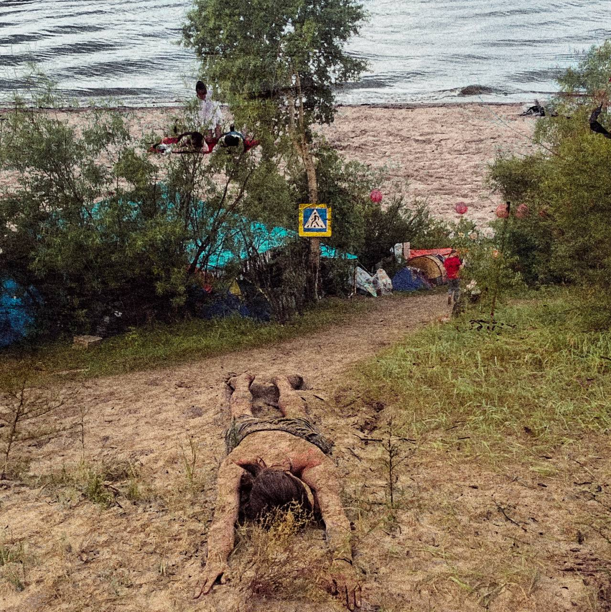
02.08.2025 21:06:01
04.08.2025 12:14:06
Видишь, там на горе возвышается крест?
Под ним десяток солдат — повиси‑ка на нём.
А когда надоест, возвращайся назад:
Гулять по воде, гулять по воде, гулять по воде со мной!
04.08.2025 12:14:06
06.08.2025 14:03:28
ночью всякое бывает
06.08.2025 14:03:28
03.09.2025 16:25:48
18.09.2025 16:20:08
19.10.2025 09:57:11
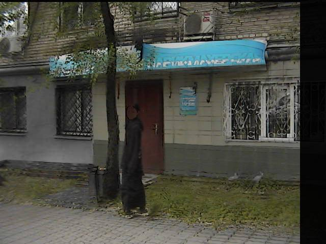
20.10.2025 16:23:55
07.11.2025 17:36:11
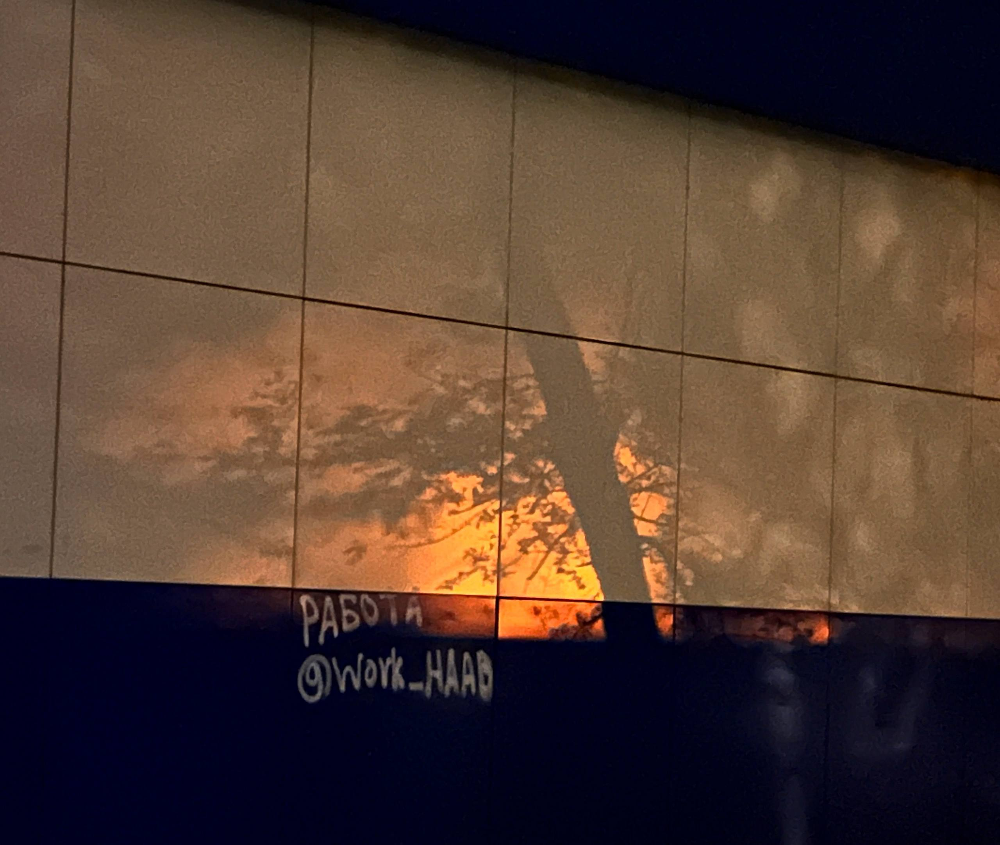
16.12.2025 15:37:22
неприятно осознавать бессмысленность того что слышишь, хуже — не понимать причину
этой бессмысленности
в диалоге с человеком
понимаешь — что-то не сходится, а что именно —не ясно.
это паралогизм.
с грек παραλογισμός — ложный вывод. когда человек искренне верит что прав. но где-то в цепочке
рассуждений есть баг.
все равно что изменять кривую прямым инструментом, или наоборот.
измерение есть, результат мимо.
главное - человек делает это не специально, он реально думает что всё логично.
возможно, что не хватает знаний, времени или внимания.
все мы периодически так. но замечаем ли это?
не делаем ли этого специально?🙃
об этом следующий пост.
16.12.2025 15:37:22
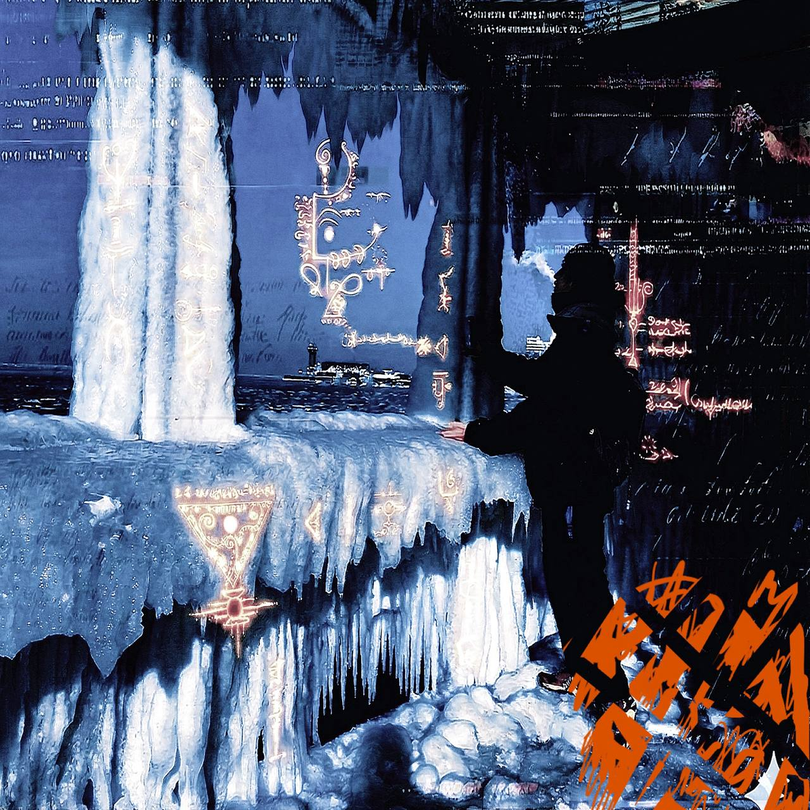
16.12.2025 15:37:22
неприятно осознавать бессмысленность того что слышишь, хуже — не понимать причину
этой бессмысленности
в диалоге с человеком
понимаешь — что-то не сходится, а что именно —не ясно.
это паралогизм.
с грек παραλογισμός — ложный вывод. когда человек искренне верит что прав. но где-то в цепочке
рассуждений есть баг.
все равно что изменять кривую прямым инструментом, или наоборот.
измерение есть, результат мимо.
главное - человек делает это не специально, он реально думает что всё логично.
возможно, что не хватает знаний, времени или внимания.
все мы - периодически так делаем. но замечаем ли это?
не делаем ли этого специально?🙃
об этом следующий пост.
16.12.2025 15:37:22
17.12.2025 19:11:21
что если я, заранее понимая, что структура моей логики неверная — продолжаю
убеждать человека в своей правоте?🐢
в таком случае цель коммуникации — победа, а не попытка разобраться в реальном отношении вещей.
и больше это похоже на соревнование.
> всё, что ты не потерял — ты имеешь.
> ты не потерял рога.
> значит, у тебя есть рога.
логично?
подмена в слове "иметь".
в первом случае — "обладать чем-то".
во втором — "физически носить на голове".
тут два смысла склеены в один.
> мужчина — человек.
> женщина — не мужчина.
> значит, женщина — не человек.
"человек" в первой строке — категория.
во второй — синоним мужчины.
подмена внутри одного слова.
> "9 из 10 стоматологов рекомендуют"
каких стоматологов? откуда данные?
-не важно, ведь звучит убедительно.
> "все успешные люди встают в 5 утра"
как будто между сном и успехом прямая связь.
на самом деле: нет.
навыки софистики применимы в юриспруденции, маркетинге, политике и не только, но фактически являются
манипуляцией, подменой понятий, типа: "не баг,а фича".
итак:
паралогизм — случайный баг. человек верит — что прав.
софизм — взлом и манипуляция, способ достижения цели.
разница — в намерении и роли прибегающего к таким уловкам человека.